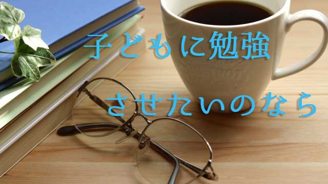

親にとって少し耳の痛い話をしよう。
よく「子どもが勉強しないがどうすれば…」と聞かれるが、子どもに勉強してもらいたいのなら親が勉強すればよい。
子どもに本を読んでもらいたいなら親がまず読書にいそしむこと。
思いやりあふれる子でいて欲しいなら親が人を思いやること。
こう言うと「今さら勉強なんて…」と戸惑う親がいて驚かされる。勉強というと学校でするものだと思い込んでいるのだろう。
だが大人にとっても「勉強」が大切なのは言うまでもない。
仕事上必要なことを学ぶこと。人間関係で悩んだことがきっかけとなって心について学び始める人もいれば、趣味を究めようとその道について深く学び始める人もいる。
中高年になって本格的に大学などに入りなおして勉強する人もいる。
勉強の定義を広げてみれば、人間は一生学び続ける姿勢をもつことであらゆることが勉強のきっかけになることを知る。むしろ社会に出てからのほうが本当の「勉強」の始まりなのだ。
しかし多くの人にとって学生時代に「やらされた勉強」が勉強であり、テストなどで脅されるように机にかじりついてやるのが勉強というイメージをもっている。だから卒業すると「勉強」という行為から離れてしまう。
「ヤレヤレもう勉強なんてしなくてよい！」というわけだ。
勉強とは嫌々やるもの。嫌だしつまらないものだが受験があるから仕方なくやるもの。
親がもし、このような勉強観を心の中に持ったまま子どもに「勉強しなさい」と言うならどういうことになるだろう。
「勉強しないと将来困る」「勉強は大切」と口先では言いながら本音の部分では「つまらないものだ」と思っているとしたら、子どもは親の言葉をどう受け取るだろうか。
当然ながら「勉強はつまらないが将来に備えて嫌々やるもの」という本音が伝わる。
なぜなら親の発するメッセージは常に言葉ではなく「本音」が伝わるからだ。
つまり親の潜在意識が子どもに刻まれる。子どもは決して勉学に前向きに取り組むことはないだろう。
親が「学ぶ」ことの３つの効用
だから親が勉強すること。何でもよいから自分がいまもっとも関心のあることについて調べたり、情報を集めたり考えるなどして一心に打ち込んでみること。
必ずしも文献を読みこなしたり、学校や講座に通うなど大げさなことをする必要はない。（とはいえ、そのような本格的な勉強が可能ならやって欲しいが）
サークルに入るなり趣味を究めるでも何でもよい。大事なことは何かに熱心に打ち込む姿勢をもつことだ。自分のテーマをもちそのことを一生懸命追究する姿勢である。
親が「自分のこと」を一生懸命やっている姿を見せ始めると、子どもも自分のやるべきことをやり始める。それが自然なあり方となる。
これにはいくつかの効用がある。
１つは、親の意識が子どもから離れることで子どもは親からの「監視の目」を免れることができる。それまで「やらされている」という思いが子どもの自主性発揮のブレーキとなっていたので、それが外れることで「自主性」が目覚める。やる、やらないは全て自分の責任となるからだ。親も常に子どもの「不足」ばかり見てイライラしていたストレスから解放される。
つまり親子双方にとって好ましい状態となる。
2つめは、親が自分の興味関心に従って「勉強」することで子どもにとっても、それこそが本来の勉強であると親の姿を通して気づく可能性が高いということ。
食卓などで子どもの前で、夫婦が互いの「勉強」の成果を語り合うことをお勧めしたい。これは効果バツグンの方法といえる。
ただし、これら２つの効用はあくまで親が「自分のため」に行った結果であって、子どもに勉強させる目的で行うことではないことに注意したい。
「親が勉強する姿勢を見せれば、子どもも勉強するのね」という計算づくでは本末転倒。
子どものことなど忘れて自分のことに夢中になる、その結果として子どもも自分のやるべきことに向かうという話だからだ。
そして３つめの効用。これが案外いちばん大切かもしれない。親の成長、新しい人生の展望が開ける、そういう可能性が高まるということだ。
人は40代に入る頃それまでの人生を見直す時期に差しかかる。仕事や日常生活については一定の技量や習慣が身につき破たんのない生活を送る一方、同じことのくり返しや習慣的発想に閉じ込められ新しい才能や人生の展望が見えなくなっている。
要するに停滞しがちだということ。それでいて目の前の忙しさにかまけて、己の真なる欲求に気づかないまま漠然とした不安や焦燥感を感じている。
私もそうだった。30代後半から40代前半にかけて「自分の人生はこのままでいいのか」という得体の知れない焦りを感じていた。
そこで仕事の役にでも立つかなという思いで、セミナーに出たり大学院の社会人向け講座を取ったりしたがしっくり来なかった。
ジプシーのように何か知識を求めてさまよっても、心の空白を埋められなかった。
人生のテーマを見つける
あるとき、昔から興味はあったもののその後放置してきたテーマを思い出した。それは心理学だった。それからはフロイトやユングに始まり現代心理学まで、独学でひたすら興味のおもむくまま読み進めた。
ここがポイントだったと思う。
何かに役立てようとか、この勉強がどこにどうつながるかなど一切考えず興味関心の命じるまま突き進むこと。
私の場合そこには「人間というものを徹底的に知りたい」という欲求があることに気づいた。それは子どもの頃からずっとあった関心だった。私にとって人間こそがもっともナゾの存在だったからだ。
だから勉強しているという意識はなく、ただひたすら「知りたい」「解明したい」という内的欲求に促され「知っていく喜び」を追究していたといえる。
結局この時期に学んだことが今の私の仕事や生き方を方向づけることになった。「ここにつながっているのか」という感覚。同時におかげで「人生の展望は開けた」という感謝の感覚をもっている。
誰にでも自分なりのテーマというものがあるのではないだろうか。そのテーマに取り組むことは自分の眠っている可能性を目覚めさせその後の人生を豊かにする。
日常生活の忙しさにまぎれて自らのテーマを見失っていると、不安や焦り行き詰まりを感じるようになる。それが中年の危機だ。
そのイラ立ちや不安が子どもに投影され、自らの欠落感を子どもの「不足部分」として見てしまう。
子どもが勉強しないからイライラするのではない。自分の欠落に対するイライラを子どもの態度のせいに転化しているのだ。
子どもはすぐに大きくなり巣立っていく。
そのとき親であるあなたはどうするのだろう。
今のうちに親は自分の人生テーマ（興味関心あること）を探り学びを深めていこうではないか。それが第2の人生を実り多いものにしてくれる。人生後半を豊かなものにしてくれるのだ。
心の空白を「子どもの問題」で埋めてはいけない。自分こそが自分に向き合い人生のテーマを追究する。そうするとあなたのお子さんも、自分と向き合いなすべきことをするだろう。
それが「親の背中を見て子は育つ」ということだ。